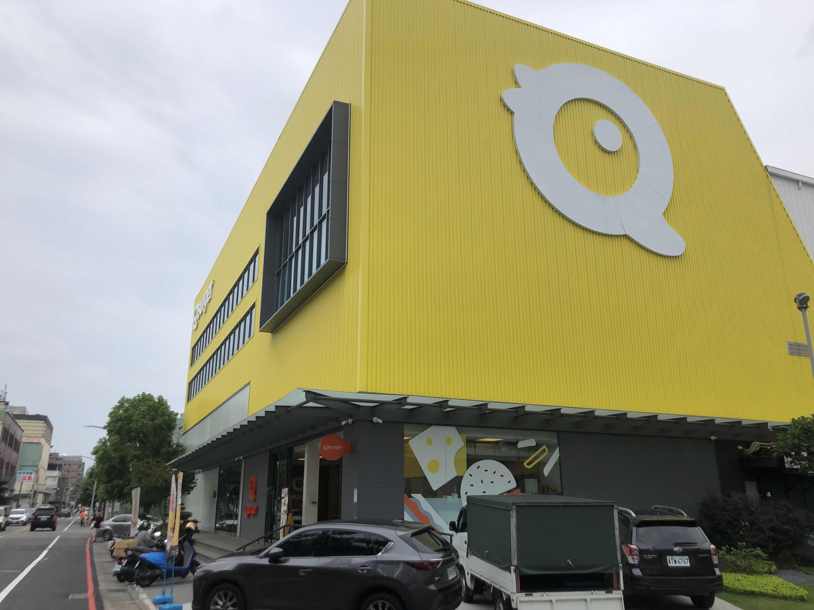
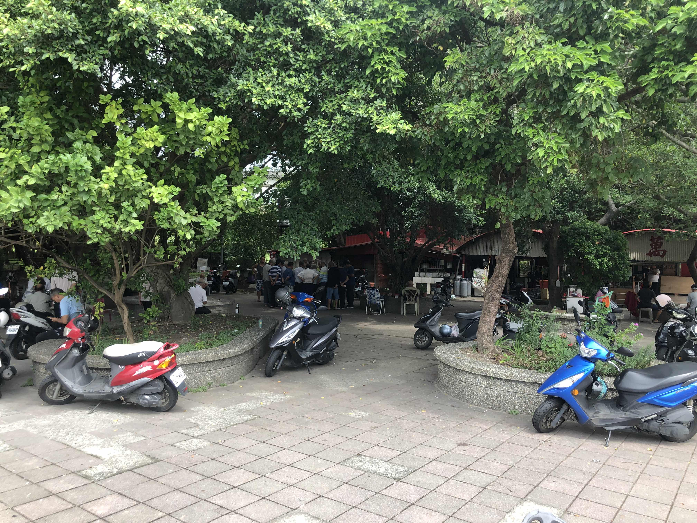

每次經過都看到有人在這邊釣魚我不太確定是死池塘還是有水流經的感覺跟minecraft只有一格水也能釣一樣
笑死 有人在疏洪道飛空拍機會被罰錢的欸
不少人在種 但面積很小種身體健康的

喔幹這間Qburger好大但我覺得Qburger沒什麼特色比較貴的連鎖美而美
三重稅捐處豆花雖然沒特別好吃 但經過還是會買

萬善公我爸說以前那邊在大家樂的時候都在報明牌、還有夜市。
剛剛發現二重疏洪道有一塊區域開放給民眾種菜，要抽籤的但感覺不是很好種，那邊颱風來就全部泡水了
筆者: NTUST So Hard